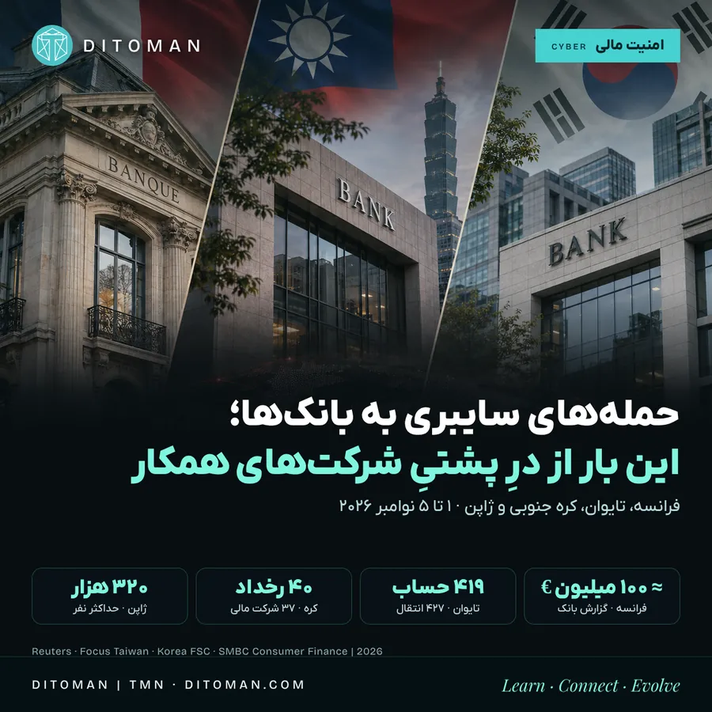
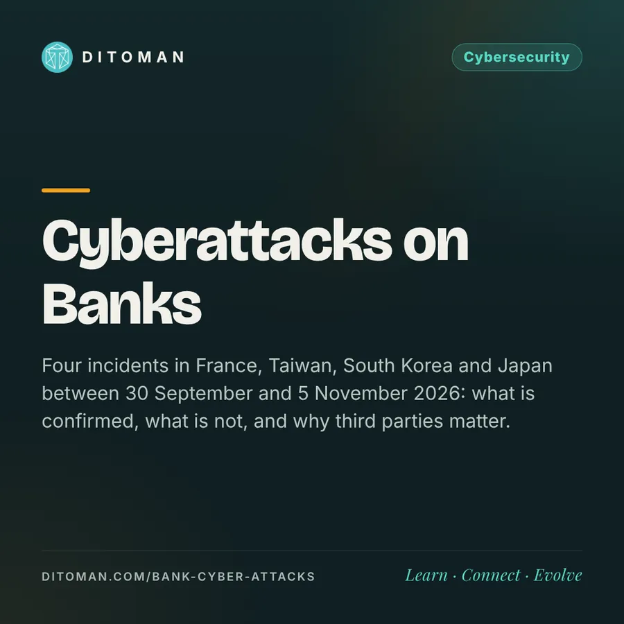

حملههای سایبری به بانکها؛ این بار از درِ پشتیِ شرکتهای همکار
Cyber attacks on banks: this time through the back door of their partners
Four incidents in France, Taiwan, South Korea and Japan between 30 September and 5 November 2026: what is confirmed, what is not, and why third parties matter.
چهار رخداد در فرانسه، تایوان، کره جنوبی و ژاپن، از ۳۰ سپتامبر تا ۵ نوامبر ۲۰۲۶: چه چیزی تأیید شده، چه چیزی نه، و چرا شرکتهای همکار (طرف سوم) اینقدر مهماند.
فرض کن بانکت امنیت حسابت را تقویت کرده، ولی مهاجم از مسیر شرکتی وارد شود که برای همان بانک نرمافزار یا خدمات میسازد. در روزهای اخیر چند حادثه از چند کشور خبرساز شد: از انتقال غیرمجاز پول در فرانسه و تایوان تا افشای اطلاعات در کره جنوبی و ژاپن.
یک نکتهی مهم. مدرکی منتشر نشده که این رخدادها بخشی از یک حملهی جهانی هماهنگ باشند. زمان و روششان فرق دارد و نباید همه را با یک اسم توضیح داد. اشتراک اصلیشان این است که در چند مورد نقطهی ورود، یک شرکت همکار یا تأمینکننده بوده، نه سیستم اصلی بانک.
۰۱. فرانسه؛ حدود ۱۰۰ میلیون یورو از حساب خود بانک
- Crédit Mutuel Arkéa روز ۴ نوامبر اعلام کرد هدف حملهی سایبری قرار گرفته است.
- طبق بانک، مهاجمان از مسیر پلتفرم یک ارائهدهندهی خدمات وارد شدند و تراکنشهای غیرمجاز را از حساب متعلق به خود بانک انجام دادند. بانک میگوید دارایی مشتریان آسیب ندیده.
- روز ۵ نوامبر بانک اعلام کرد حدود ۱۰۰ میلیون یورو مفقود شده و هنوز نمیتواند بگوید چقدرش بازمیگردد. برای احتیاط، بعضی تراکنشها را موقتاً متوقف کرد.
- ادعاهای تأییدنشده: تحلیلگران بلاکچین (از جمله ZachXBT) میگویند برداشتها از ۱ و ۲ نوامبر شروع شد و بخشی از پول از صرافیها به استیبلکوین و اتریوم تبدیل شد؛ رقم اولیهی آنها بیش از ۱۰۶ میلیون دلار و بعد بیش از ۱۳۳ میلیون دلار بود. بانک هیچکدام را تأیید نکرده. طبق همین گزارشها تتر حدود ۱٫۱ میلیون دلار USDT را فریز کرد. من اینها را فقط از خلاصهی گزارش Halborn دیدم.
۰۲. تایوان؛ برداشت غیرمجاز از ۴۱۹ حساب
- SinoPac روز ۳ نوامبر انتقالهای غیرمجاز دید و روز ۴ نوامبر جزئیات را اعلام کرد: ۴۱۹ حساب، ۴۲۷ تراکنش، جمعاً حدود ۴۱٫۷۶ میلیون دلار تایوان (حدود ۱٫۳ میلیون دلار آمریکا). هر تراکنش حدود ۱۰۰ هزار دلار تایوان به یک حساب در بانکی دیگر بود.
- بانک میگوید مهاجمان از ضعف تنظیمات امنیتی در سامانهی تازهی بانکداری موبایل، که شرکتی بیرونی تأمین کرده بود، سوءاستفاده کردند.
- پول همهی مشتریان بازگردانده شده؛ بانک شواهدی از افشای دادهی مشتریان ندیده است. بانک قصد دارد از تأمینکننده خسارت بگیرد، حساب مقصد موقتاً مسدود شده و دادستانی تایپه بهعنوان جرم رایانهای تحقیق میکند.
در بعضی گزارشها تعداد حسابها ۴۱۸ آمده؛ Focus Taiwan و اعلام نهاد ناظر ۴۱۹ را نوشتهاند و من همین را آوردهام.
۰۳. کره جنوبی؛ ۴۰ رخداد در ۳۷ شرکت مالی
- طبق اعلام نهادهای مالی کره در جلسهی ۵ نوامبر، از ۳۰ سپتامبر تا ۳ نوامبر ۴۰ رخداد امنیتی در ۳۷ شرکت مالی ثبت شده است.
- حدود ۴۷۳ هزار «مورد افشای اطلاعات» و حدود یک میلیارد وون (حدود ۷۴۵ هزار دلار) پول تصاحبشده گزارش شده.
- شرکتها طبق گزارش SBS: ۱۰ شرکت مالی الکترونیکی، ۵ بانک پسانداز، ۵ شرکت سرمایهگذاری، ۴ بانک، ۴ شرکت وامدهی P2P، ۳ بیمه، ۳ ارائهدهندهی دارایی دیجیتال، ۲ شرکت اعتباری و ۱ تعاونی مالی.
- بررسیها دربارهی روش حمله، ارتباط احتمالی میان رخدادها و نقش احتمالی هوش مصنوعی ادامه دارد. مقامها گفتهاند نمیتوان نقش هوش مصنوعی را رد کرد، ولی نتیجهی قطعی نیست. طبق گزارش رسانهها، درز کردن رمز حسابها هم تأیید نشده است.
«۴۷۳ هزار مورد» لزوماً ۴۷۳ هزار نفر نیست و «۳۷ بانک هکشده در یک روز» هم نیست. آمار شرکتهای مالی گوناگون در بیش از یک ماه است و فقط ۴ تای آنها بانک تجاریاند.
۰۴. ژاپن؛ افشای اطلاعات در شرکت تضمینکنندهی وام
- SMBC Consumer Finance روز ۲ نوامبر دسترسی غیرمجاز به «سیستم تضمین» خود را شناسایی کرد و روز ۵ نوامبر اعلام کرد.
- این شرکت وامهای کارتی را که بانکهای منطقهای، اتحادیههای اعتباری و بانکهای اینترنتی شریک میدهند تضمین میکند و برای بعضی از آنها فرم درخواست آنلاین هم فراهم میکند.
- اطلاعات «تا سقف ۳۲۰٬۱۱۸ نفر» ممکن است در دادههای خارجشده باشد (نه الزاماً همهی موارد برای همه): نام، جنسیت، تاریخ تولد، آدرس، تلفن، ایمیل، شمارهی گواهینامه، محل کار و درآمد سالانه و جزئیات قرارداد. تصویر مدارک جزو آن نیست.
- سیستم موقتاً متوقف شده، سوءاستفادهی ثانویه تأیید نشده و مشتریان پس از روشن شدن دامنه بهطور جداگانه مطلع میشوند. بانکهای شریک نام برده نشدهاند و یکی از بانکهای مرتبط میگوید نفوذ به سیستم خود بانک تأیید نشده.
جزئیات ژاپن را از خلاصهی SmartScope دیدم و PDF اصلی شرکت را خودم نخواندم.
۰۵. آیا اینها حملهی DDoS بودند؟
DDoS معمولاً یعنی از دسترس خارج کردن یک سایت یا سرویس با فرستادن حجم زیاد درخواست. اما در فرانسه و تایوان گزارشها از انتقال غیرمجاز پول میگویند و در ژاپن و بخشی از کره از افشای داده. پس همه را نباید با یک اسم توضیح داد.
۰۶. نگاه دیتومان
پشت اپلیکیشن سادهای که هر روز با آن پول جابهجا میکنیم، شبکهای از بانکها، شرکتهای نرمافزاری، ارائهدهندگان پرداخت و تأمینکنندگان فناوری هست. این حوادث نشان میدهد امنیت یک حساب فقط به رمز صاحبش یا سیستم داخلی بانک وابسته نیست؛ ضعیفترین حلقهی همکاران بانک هم اهمیت دارد.
- خبر مربوط به حسابت را فقط از مسیر رسمی بانک بگیر.
- تراکنش عجیب را فوراً گزارش کن.
- رمز، اطلاعات کارت و کد پیامکی را هرگز در تماس یا پیام در اختیار کسی نگذار.
- اگر دادهات لو رفته، خطر اصلی کلاهبرداری با اطلاعات واقعی توست (تماس جعلی با اسم بانک)، نه فقط هک حساب.
منابع
- اعلام Crédit Mutuel Arkéa و گزارش رویترز دربارهی ۱۰۰ میلیون یورو (۴ و ۵ نوامبر ۲۰۲۶)
- Halborn: Explained, The Crédit Mutuel Arkéa Cyberattack • halborn.com
- Focus Taiwan: SinoPac و انتقالهای غیرمجاز (۴ نوامبر ۲۰۲۶) • focustaiwan.tw
- SBS و Korea Herald: آمار ۴۰ رخداد در ۳۷ شرکت (۵ نوامبر ۲۰۲۶) • news.sbs.co.kr • koreaherald.com
- SmartScope: SMBC Consumer Finance (اطلاعیهی ۵ نوامبر ۲۰۲۶) • smartscope.blog
کاور بر پایهی تصویر ساختهشده با هوش مصنوعی است. اعداد از گزارشهای ۱ تا ۵ نوامبر است و ممکن است بهروز شود. این متن توصیهی مالی نیست.